Take a deep breath and live the moment with us
Wadi Ibn Hammad –Karak:


"Preserve and cherish the pale blue dot, the only home we’ve ever known." —Carl Sagan
Dibeen Forest – Jerash :
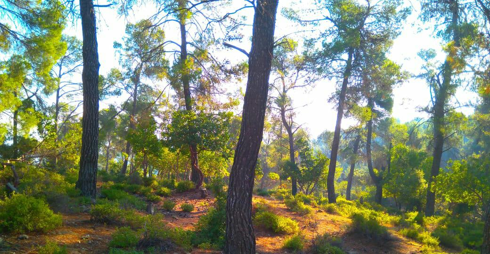

“In every walk with nature, one receives far more than he seeks.” – John Muir
Inaba Forest – Irbid
 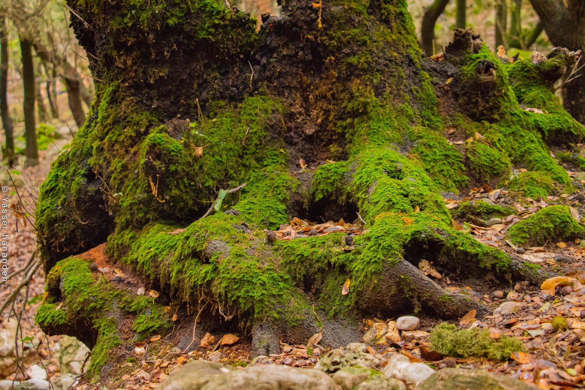
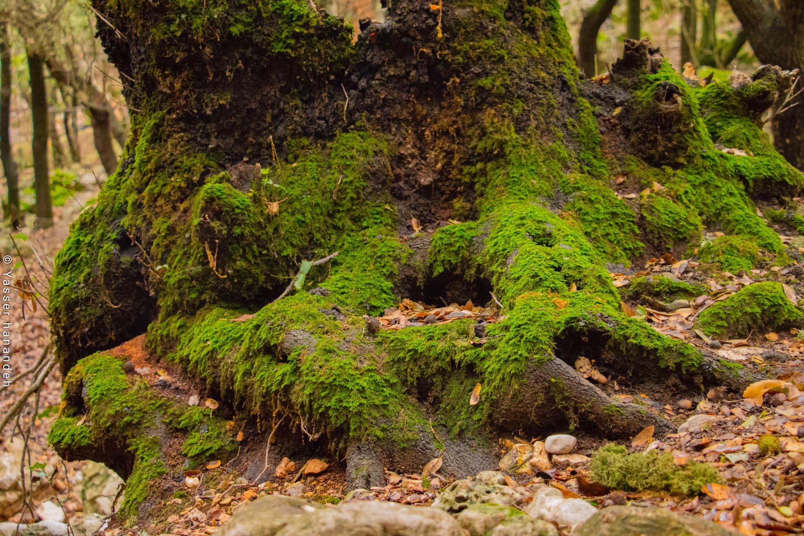

“Time spent amongst trees is never time wasted.”– Katrina Mayer
Alarayes Lake - Irbid:
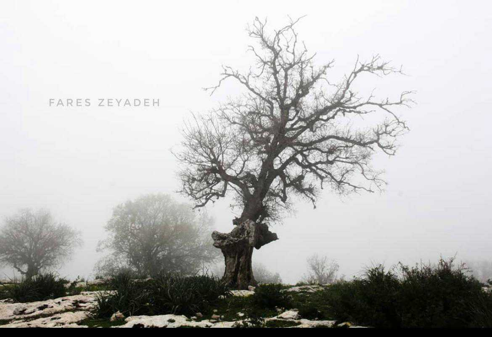

Look deep into nature, and then you will understand everything better. – Albert Einstein
Azraq wetland Reserve- Al-Azraq:
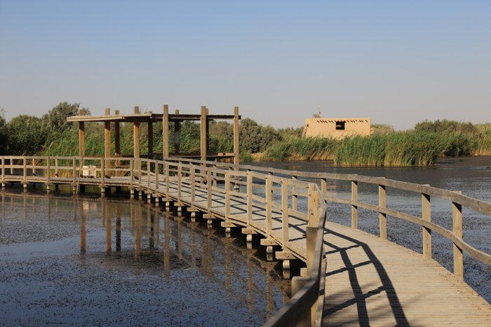 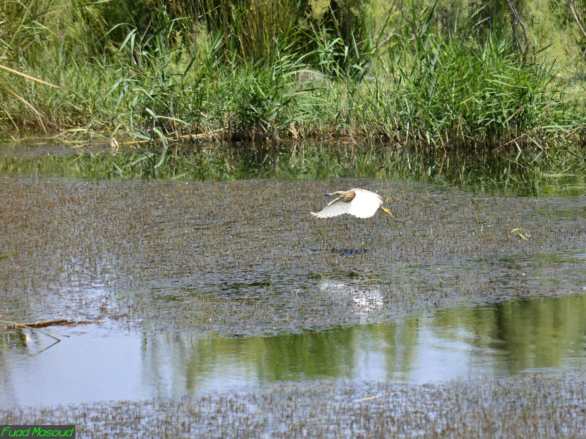
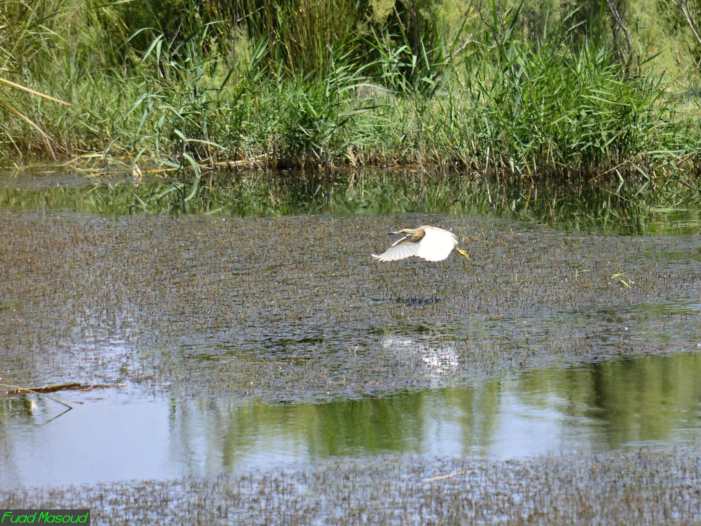
And forget not that the earth delights to feel your bare feet and the winds long to play with your hair. –Gibran Khalil Gibran
Wadi Mkheris - near Dead sea:
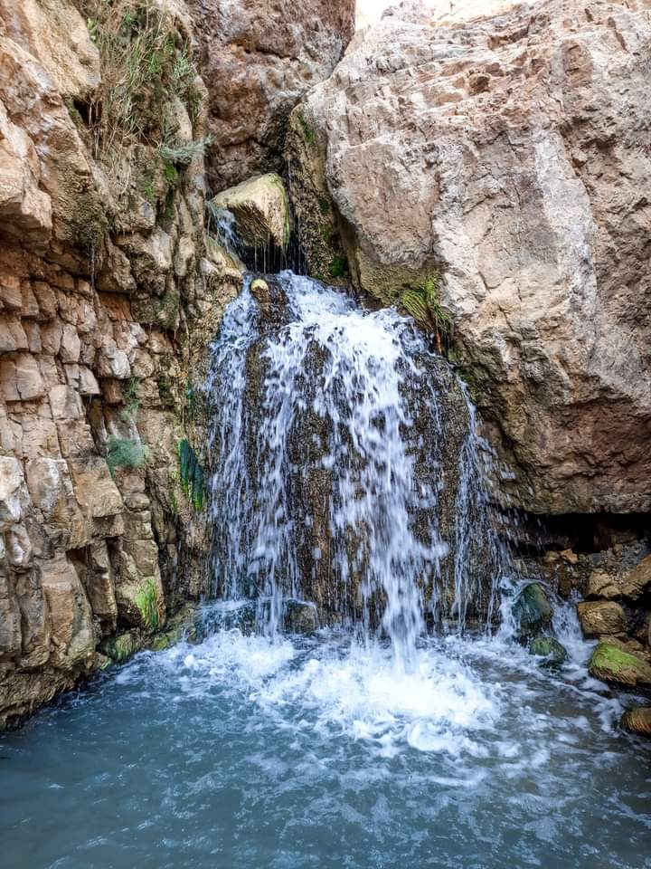 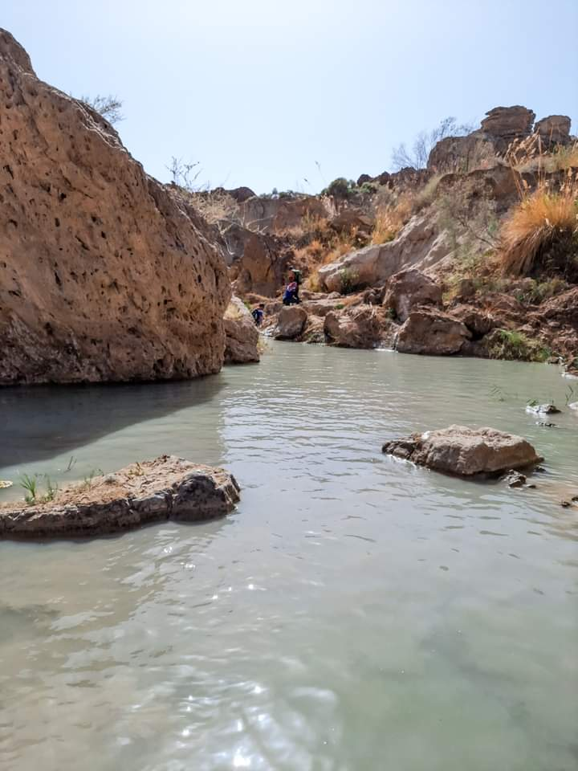
"I go to nature to be soothed and healed, and to have my senses put in order." – John Burroughs
Wadi Rum :
 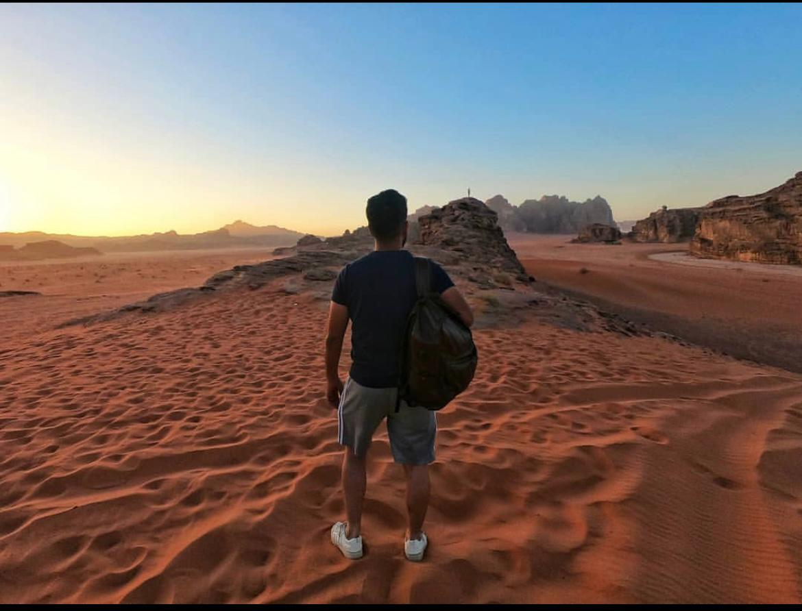
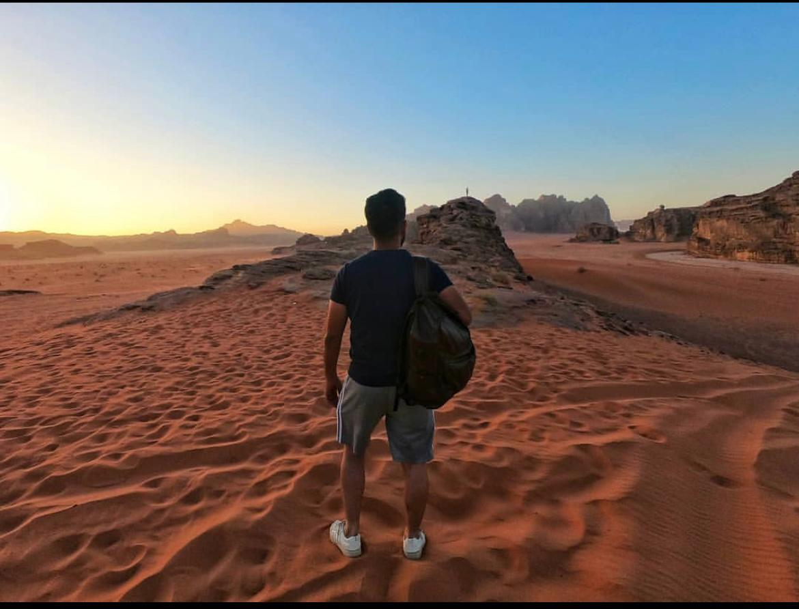

“The desert, when the sun comes up. I couldn't tell where heaven stopped and the Earth began.“ - Tom Hanks
petra :


“A desert is a place without expectation.”- Nadine Gordimer